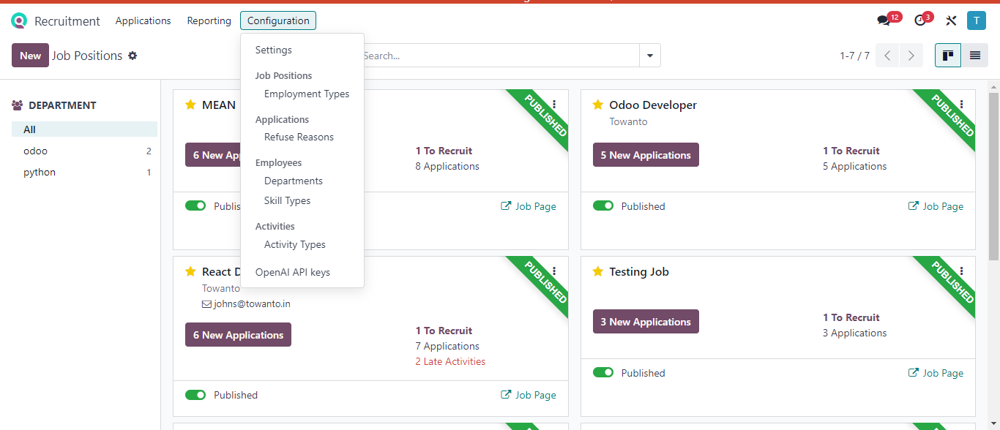
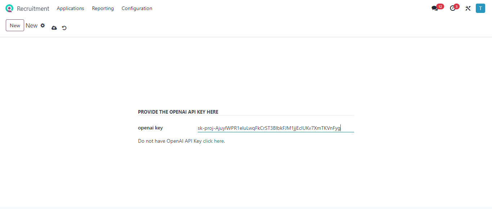
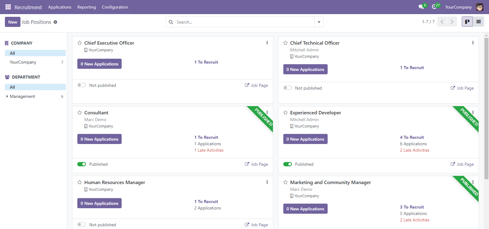
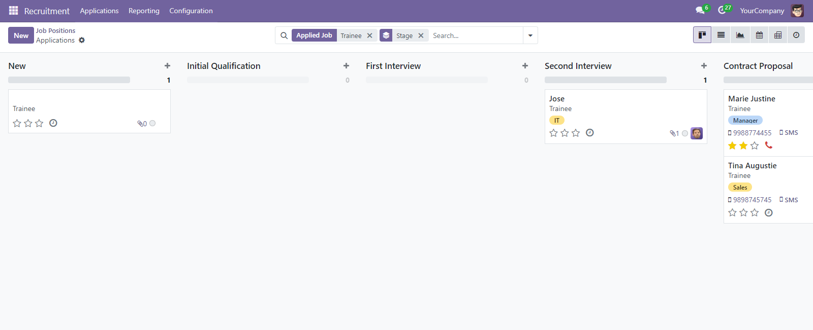
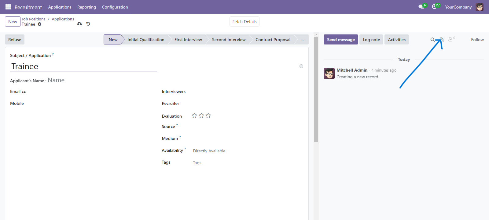
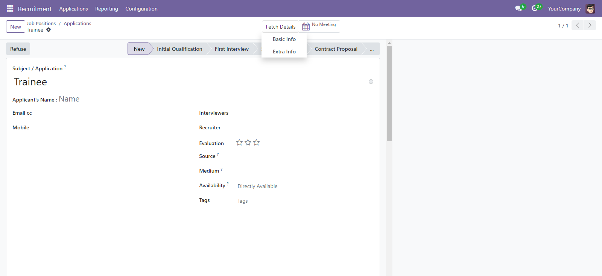
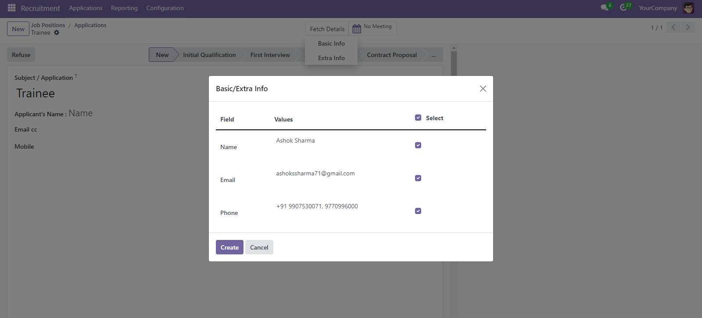
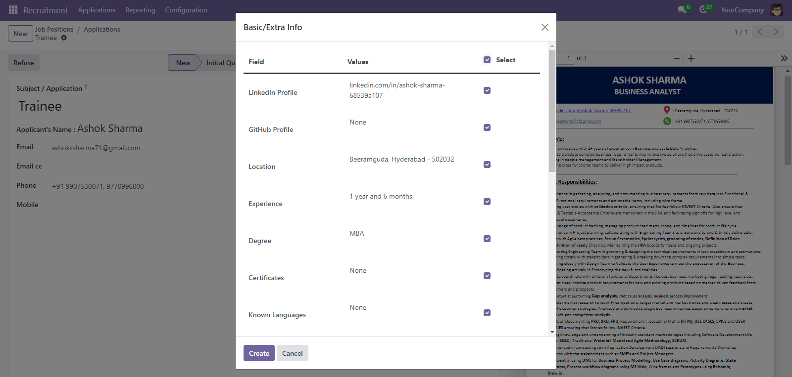
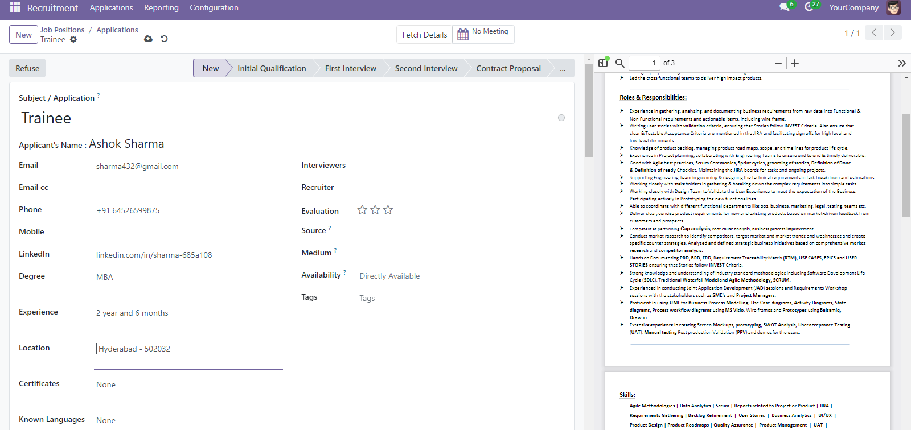
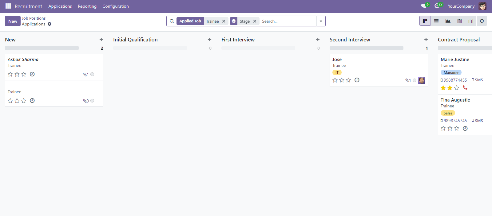

Autofill with Resume Odoo
This Auto-fill with Resume odoo module leverages OpenAI's GPT-4 model enhances the recruitment process by automating data extraction from resumes
uploaded by HR or applied by applicants via website directly on job post.
Once a resume is uploaded or a candidate applies for a job, the module scans the document and extracts
relevant details such as the applicant's name, experience, contact information, qualifications, and more additional fields for which there is Option.
These details are then automatically populated into the appropriate form view fields within Odoo, reducing
manual data entry efforts.
Pre-requisite
OpenAI API Key Configuration:
Before using the Autofill with Resume feature, the OpenAI API key must be set up:
- Navigate to Configuration Menu > OpenAI API Key Submenu.
- Enter your OpenAI API key in the provided field.
- Save the changes to enable communication with OpenAI's GPT-4 model


Streamlined Workflow
By streamlining this workflow, the module ensures faster, more accurate handling of candidate information,
ultimately improving the efficiency of HR and recruitment teams.
The module is designed to be easy to install and integrate into your existing Odoo recruitment flow,
allowing for seamless automation without the need for complex configurations or code changes.

This recruitment dashboard shows a list of available job openings within the company. Each job listing
includes the position title, company, department, and the number of applications received. To apply for a
job, simply click the "New" button. You can also filter jobs by status (published or not published) or
search for specific positions using the search bar.

This image depicts a recruitment dashboard showing a list of job applicants for a "Trainee" position. The
dashboard includes columns for the applicant's name, job title, stage in the recruitment process (Initial
Qualification, First Interview, Second Interview, Contract Proposal), and contact information (SMS). The
"New" button suggests that users can add new applicants to the list.

A designated area for uploading resumes, typically located near the end of the application form, where
applicants can attach their qualifications for evaluation.

The image shows a recruitment dashboard where users can view and manage job applications. In the specific
section highlighted, users have the option to "fetch details" for both "basic info" and "extra info." This
functionality allows recruiters to access additional information about the applicant beyond what is
initially displayed

Basic Info: This likely refers to essential details such as the applicant's name, contact information,
education, and work experience. This information is typically required for initial screening and evaluation.

Extra Info: This may include more in-depth details that might not be necessary for every application, such
as references, specific skills, or additional qualifications. Recruiters can choose to fetch this
information if they need to make a more informed decision or if the applicant's qualifications align closely
with the job requirements.

This shows that users can "fetch details" for both "basic info" and "extra info." This
functionality allows recruiters to access additional information about the applicant beyond what is
initially displayed. By clicking on "fetch details," recruiters can view the applicant's resume and select
specific details to be added or removed from the basic and extra info sections. This allows recruiters to
customize the information they want to display and focus on the most relevant details for the position.

This shows a list of job applicants for the different job positions. Each applicant's job status and
contact information are displayed. To add a new applicant, click the "New" button. And we can check applicant's application status.